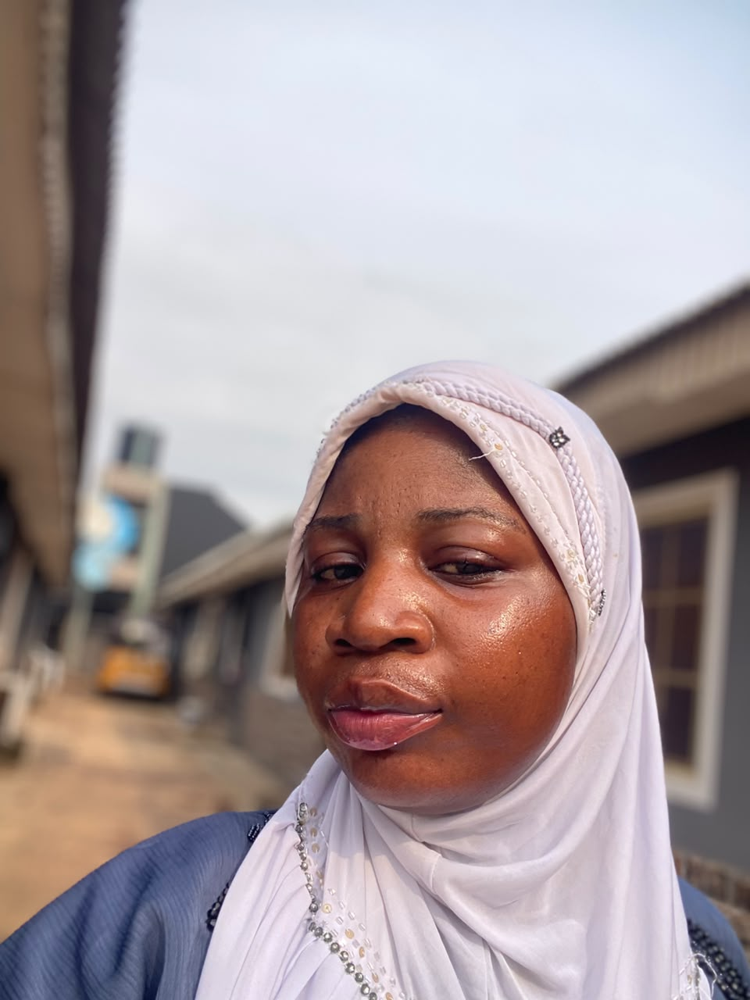

Email: awawuaromire@gmail.com
Address:13,Jesuloba Street,Off Gbaga Elepe Road.
Number: 09069325794
Nationality:Nigerian
Marital Status:Single

<A graduate of Accounting department from Kwara State Polythenic and a fast learner that can swiftly adapt to any working environment. Instrested in being part of a dynamic and well oriented organization with challenging and rewarding opportunity for personal career growth where high values are placed with creativity and hard work.
Institute:Kwara State Polythenic,Ilorin (2022/2024)
Institute:Kwara State Polytechnic,Ilorin (2017/2020)
Institute:Yewa Junior/Secondary School,Ikorodu (2013/2025)
Jendol Superstore Lagos, Nigeria (Merchandiser) 2023-2025
CKG-Herbal Lagos, Nigeria (Marketer) 2020-2022
MM Hotel Lagos, Nigeria (BarLady) 2019-2020
SuperSpin Casino Game Lagos, Nigeria (Cashier) 2018-2019
TopBite Eatery Lagos, Nigerian (Sales-Rep) 2021-2022
A good team player
Ability to work under supervision
Proficiency in office tools (Microscoft office and Canva design)
A Graphics Designer (CorelDraw/AD-AdobePhotoshop)
Singing, Cooking, Dancing, Reading, Travelling, Meeting new people.